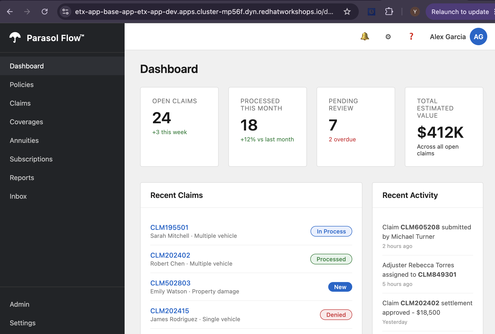
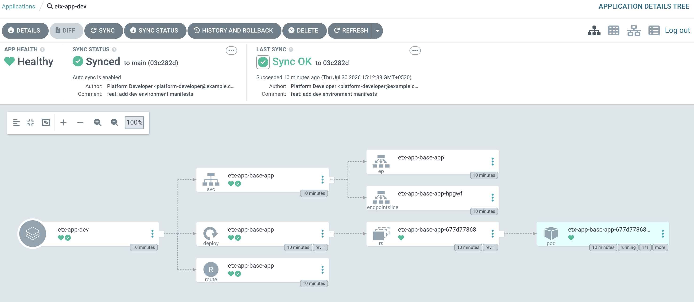

Lab 9: Deploy the Application with Argo CD
In this lab, you’ll create an Argo CD Application that continuously synchronizes the GitOps repository with your OpenShift cluster. Once configured, Argo CD automatically deploys the application and keeps the cluster aligned with the desired state stored in Git.
By the end of this lab, you will have:
-
Granted Argo CD permission to manage resources in the development project
-
Created an Argo CD Application for the development environment
-
Verified that the application was synchronized and deployed successfully
Grant Argo CD Permissions
Before Argo CD can deploy applications, its application controller requires permission to manage resources in the etx-app-dev project.
-
Open a terminal in your OpenShift Dev Spaces workspace or launch the Web Terminal from the OpenShift console.
-
Grant the required permissions:
oc adm policy add-role-to-user admin \ system:serviceaccount:etx-app-dev:argocd-application-controller \ -n etx-app-dev
This grants the Argo CD Application Controller administrative access within the etx-app-dev project so it can create, update, and remove application resources during synchronization.
Create the Argo CD Application
Next, create an Argo CD Application that monitors the GitOps repository and synchronizes the manifests for the development environment.
-
Retrieve the GitLab URL:
# Get GitLab URL dynamically GITLAB_URL="https://$(oc get route -n gitlab \ -l app=webservice \ -o jsonpath='{.items[0].spec.host}')" echo "Using GitLab URL: ${GITLAB_URL}" -
Create the Argo CD Application:
oc apply -f - <<EOF apiVersion: argoproj.io/v1alpha1 kind: Application metadata: name: etx-app-dev namespace: etx-app-dev spec: project: default source: repoURL: ${GITLAB_URL}/software-factory/etx-app-gitops.git targetRevision: main path: environments/dev destination: server: https://kubernetes.default.svc namespace: etx-app-dev syncPolicy: automated: prune: true selfHeal: true syncOptions: - CreateNamespace=false EOF
The application continuously watches the environments/dev directory in the GitOps repository and automatically synchronizes any changes to the OpenShift cluster.
CreateNamespace=false is specified because the etx-app-dev namespace already exists.
|
Verify the Application Synchronization
Confirm that Argo CD has successfully synchronized the application.
-
Check the synchronization status:
oc get application etx-app-dev -n etx-app-dev \ -o jsonpath='{.status.sync.status}{"\n"}'
The command should return:
Synced-
Retrieve the Argo CD dashboard URL:
oc get route argocd-server -n etx-app-dev \ -o jsonpath='{.spec.host}{"\n"}' -
Open the Argo CD dashboard in your browser and verify that the application status is Synced.

Verify the Application Deployment
Once synchronization is complete, verify that the application has been deployed successfully.
-
Check that the application pod is running and retrieve the application route:
oc get pods -n etx-app-dev \ -l app=etx-app-base-app oc get route etx-app-base-app -n etx-app-dev \ -o jsonpath='{.spec.host}{"\n"}' -
Open the application URL in your browser to confirm it is accessible.

-
Return to the Argo CD dashboard and select the application to view its deployed resources and synchronization status.
